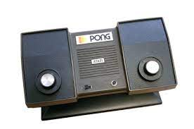
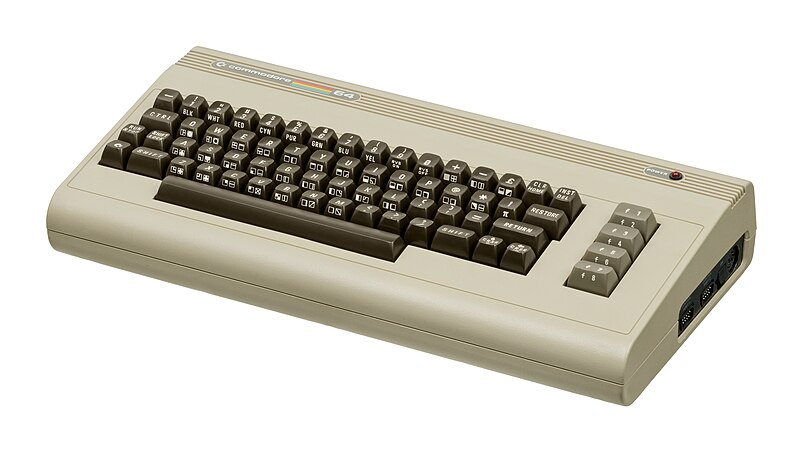
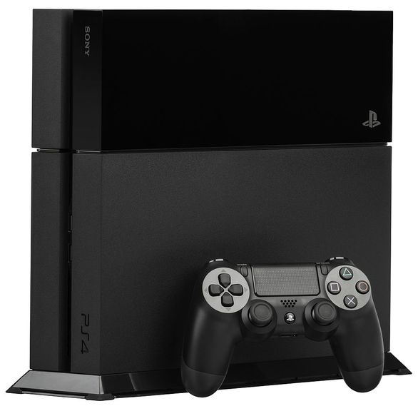

A számítógépes játékok története
A számítógépes játékok története
A számítógépes játékok története a számítógépekével közel azonos időre vezethető vissza.
Az első programozók csak a maguk szórakoztatására vagy a számítógép képességeinek demonstrálására készítették számítógépes játékprogramjaikat. Később jelent meg az üzlet lehetősége, ami önálló iparrá tette a számítógépes játékgyártást.
A számítógépekben rejlő lehetőségek bemutatására készített játékprogramok mind a mai napig fontos színterei a fejlesztéseknek.
Gondoljunk csak a sakkozógépre. A Deep Blue az IBM által kifejlesztett számítógép, amely sakkjátékban 1997-ben egy szabályszerű hatjátszmás páros mérkőzésen 3,5-2,5 arányban legyőzte Garri Kaszparovot, az emberi sakkozás akkori világbajnokát. A cél az volt, hogy bemutassák, a számítógép nem úgy gondolkozik, ahogy az ember, de a nyers számítási erő képes speciális esetekben az emberi gondolkodással vetekedni.
DEC PDP-1

A Spacewar! az egyik legkorábbi ismert digitális számítógépes játék. A játék elkészítésének célja az volt, hogy demonstrálják a DEC PDP-1 számítógép számítási és megjelenítési képességeit.
A fejlesztést Steve Russel 1961-ben kezdte el, és 200 órányi fejlesztés után 1962 februárjában készült el az első változattal.
A játékban három objektum szerepel:
- Ék alakú űrhajó
- Tű alakú űrhajó
- Csillag
Az űrhajók korlátozott számú rakétával és üzemanyaggal rendelkeznek. A játékban a két űrhajót két játékos irányítja. A feladat az ellenséges űrhajó megsemmisítése úgy, hogy közben elkerüljük a csillaggal vagy a másik űrhajóval az ütközést. A hajók az üzemanyag segítségével irányíthatók, de az űrhajók mozgását erősen befolyásolja a csillag gravitációs mezője is. Lehetőség van az ellenséges rakéták elől a hipertérbe menekülni, de ekkor a visszatérés egy véletlenszerű helyen történik, és ez egyre nagyobb valószínűséggel a hajó felrobbanásához vezet.
Vissza
PONG
A PONG volt az első nagy népszerűséget és széleskörű ismertséget szerzett videojáték. 1972-ben készítette el Allan Alcorn, az Atari cég mérnöke. Ez egy asztalitenisz játék, amit egyszerű kétdimenziós grafikával oldottak meg. A két játékos egy-egy függőlegesen mozgatható ütőt irányít. A cél a labda sikeres visszaütése. Amennyiben ezt valamelyik játékos elvéti, az ellenfele pontszáma eggyel nő.
Az első játéktermi változatok egy fa dobozon belül tartalmaztak egy televízió készüléket, a játékot megvalósító elektronikát és természetesen a pénzgyűjtő egységet.

Vissza
Commodore 64
A C64 kétségtelenül a történelem legsikeresebb otthoni számítógépe. A piacra történő bevezetés után mindössze 2 évvel megdöntötte az eladási rekordot több mint 4 millió példánnyal világszerte. A Commodore csődjéig pedig, általánosan elterjedt nézet szerint, 22 millió darab kelt el belőle
A hatalmas siker elsősorban annak volt köszönhető, hogy a C64, alacsony ára ellenére olyan, korát megelőző lehetőségeket kínált, amelyekről más gyártók megoldásainak felhasználói sokáig még csak álmodhattak.
Vissza
GameBoy
A Game Boy az egyik első, sikeres, nagy példányszámban eladott játékkonzol. A japán Nintendo cég által tervezett és gyártott 8-bites kézi játékkonzol egyik nagy előnye a cserélhető játékkártya volt. Japánban és Észak-Amerikában 1989-ben, Európában pedig 1990-ben került forgalomba. Ez volt a rendkívül sikeres Game Boy játékkonzol-sorozat indító modellje, megalkotója Jokoi Gunpej, aki a Nintendo fejlesztési csoportjának vezetője volt.
Annak ellenére, hogy a konzol élettartama alatt sorra jelentek meg a technikailag sokkal fejlettebb más játékkonzolok, a Game Boy óriási sikert aratott. A Game Boy és Game Boy Color modellekből együttvéve közel 120 millió darabot adtak el a világon. Az Egyesült Államokban való megjelenésekor az egész első szállítmány, 1 millió darab, hetek alatt elfogyott.
A gép csatlakoztatható további Game Boy konzolokkal is összekötő kábel segítségével. Az összekötött gépeken eleinte két játékos játszhatott egymás mellett ugyanazzal a játékkal, ilyen volt például a Tetris; később megjelentek a több konzol összekötését lehetővé tevő játékok és kábelek is. Legfeljebb 4 gépet lehet ilyen módon összekapcsolni. Ezt a kapcsolatot több játék komolyabban is kihasználja, például a Pokémon játékokban a játékosok ezen keresztül cserélhetnek Pokémonokat, és kommunikálhatnak egymás között.

A konzol 3 régióban más időben került forgalomba, a kezdeti játékkínálat is különböző volt:
- Alleyway
- Baseball
- Radar Mission (Európában)
- Solar Striker (Európában)
- Super Mario Land
- Tennis (USA-ban)
- Tetris (a csomagban, US és EU induláskor)
- Yakuman (Japánban)
Vissza
AMIGA
A Amiga 500, más néven a A500, volt a Amiga otthoni számítógép, "újradefiniálja az otthoni számítógép piacát, és az úgynevezett luxusfunkciókat, mint például a multitasking és a colour szabvány, jóval azelőtt, hogy a Microsoft vagy az Apple eladta ezeket a tömegeknek".
Ugyanazt a processzort tartalmazza Motorola 68000 mint a Amiga 1000, valamint ugyanazok a grafikák és hangprocesszorok, de kisebb esetben hasonlóak a 128. Commodore.
1992 végén a Commodore kiadta a Amiga 1200-as változatát, ez egy olyan gép, amely koncepciójában közelebb áll az eredeti Amiga 500-hoz, de jelentős műszaki fejlesztésekkel. Ennek ellenére sem az A1200, sem az A600 nem ismételte meg elődjének kereskedelmi sikerét.
Vissza
SNES
A Super Nintendo Entertainment System (röviden Super Nintendo, Super NES vagy SNES) egy 16 bites videójáték konzol, melyet a Nintendo adott ki Észak-Amerikában, Európában, Ausztráliában és Dél-Amerikában 1990 és 1993 között. Japánban és Délkelet-Ázsiában Super Famicom (スーパーファミコン) néven árulták, Dél-Koreában pedig a Hyundai terjesztette Super Comboy (슈퍼 컴보이) néven. Bár technikailag ugyanazok a készülékek, a különböző régiók típusai nem kompatibilisek egymással.
A Super Nintendo a Nintendo második otthoni konzolja, a Nintendo Entertainment System (NES) utódja. A konzol az akkori időben a legfejlettebb grafikai és zenei képességekkel bírt, ezek mellett sok segédcsipet integráltak bele, melyekkel sokáig versenyképes tudott maradni.
A konzol világsiker lett, a viszonylag késői indulása és a Sega Mega Drive-val való éles versengése ellenére is a 16 bites korszak legtöbbet eladott játékkonzoljává vált. Sokak számára a SNES jelenti a videójátékok „aranykorát” a sok, játéktípusokat megalapozó címeivel és ezek kreatív, nagyszerű játékmeneteivel. A SNES népszerűsége töretlen maradt még a 32 bites korszakban is, és bár a Nintendo már nem nyújt hozzá támogatást, továbbra is kedvelt a rajongók, gyűjtők, retro játékosok és emulátorosok körében, sok házi készítésű (homebrew) ROM készül hozzá.
Vissza
PS4
A PlayStation 4 A PlayStation 4 (プレイステーション4; Hepburn: Pureisutēshon Fō?; vagy a hivatalos rövidítés szerint PS4) a Sony Computer Entertainment videójáték-konzolja. A gépet 2013. február 20-án egy sajtótájékoztatón mutatták be a PlayStation 3 utódjaként. A PS4 2013. november 15-én Észak-Amerikában 2013. november 15-én, Európában és Ausztráliában 2013. november 29-én jelent meg. Riválisai a Nintendo Wii U és a Microsoft Xbox One a nyolcadik generációs játékkonzolok részeként. A konzolból 2019 decemberéig 106 millió példányt adtak el, ezzel a PlayStation 2 (155 millió) után minden idők második legkelendőbb otthoni videójáték-konzolja.
A PlayStation 4 – Cell architektúráról átállva – egy az x86-64 utasításkészletre épülő AMD processzort használ.[12] Az átállás célja a játékfejlesztés megkönnyítése, aminek reményében több fejlesztő fog játékot készíteni a konzolra. Ezen változásokon jól látható, hogy a Sony okult a PlayStation 3 fejlesztése, gyártása és megjelenése során felmerülő problémákból. Az egyéb fontosabb hardveres tulajdonságok közé tartozik a GDDR5 8 GB egységes memória, az elődhöz képest gyorsabb Blu-ray disc-meghajtó és az egyedi hang-, videó- és háttérfeladat-feldolgozó chipek.
Az új kontrolleren lévő Share (megosztás) gombbal és az élőben streamelhető játékvideókkal a Sony a közösségi játékra is nagyobb hangsúlyt fog fektetni, mint tette azt korábban. Az új alkalmazások és szolgáltatások között kívánja elindítani a Sony a Gaikai felhő alapú játékszolgáltatást, amin letölthető tartalmak és játékok lesznek elérhetőek. A japán cég PlayStation App néven egy alkalmazást is megjelentett, ami segítségével a PS4 tulajdonosok az okostelefonjaikat és táblagépeiket második képernyőként használhatják.
Vissza
XBOX
A márka volt első bevezetés az Egyesült Államokban 2001 novemberében, a eredeti Xbox konzol. Az Xbox márkát korábban, 2012 és 2015 között, a Microsoft digitális média szórakoztató márkájaként használták fel Zune.[1][2] 2022-ben a Microsoft kibővítette szerencsejáték-üzletét és átszervezte az Xboxot, hogy részévé váljon az újonnan alakult Microsoft Gaming divíziójának. A Microsoft Gaming alatt az Xbox első fél kiadói vannak Xbox Game Studios, ZeniMax Media (Bethesda Softworks) és Activision Blizzard (Aktiválás, Blizzard Entertainment, és király), aki számos stúdióval és sikeres franchise-val rendelkezik.
Az eredeti eszköz volt az első videojáték-konzol, amelyet egy amerikai cég kínált a Atari Jaguar 1996-ban leállította az értékesítést. 2006 májusáig elérte a több mint 24 millió eladott egységet.[3] A Microsoft második konzolja, a Xbox 360, 2005-ben jelent meg, és 2021 októberétől 86 millió darabot értékesített. A harmadik konzol, a Xbox One, 2013 novemberében jelent meg, és 58 millió darabot értékesített.[4] Az Xbox konzolok negyedik sora, a Xbox sorozat X és S sorozat, 2020 novemberében adták ki. Az Xbox vezetője Phil Spencer, aki 2014. március végén Marc Whitten volt vezetője lett.